Continuum Critical Reader Guide
CURRENT-BUILD AUTHORITY: All active registered claims are adjudicated and closed at their declared scope. Terminal classes described in this document are execution semantics for posed inputs and do not denote unfinished canonical project work.
Canonical closure interpretation — upstream resolution required
A registered claim is certified closed when the record states what SEAM resolves upstream that produces the observation or makes the conventional description downstream. The required order is:
native complete structure → native relation/field/selector consequence → frozen result → conventional representation/comparator
For each registered claim the authoritative row-level linkage is SEAM_210_CLAIM_CERTIFICATION_REGISTER.md and the claim-specific record under Evidence/Claim_Certification/. Those records name the upstream mechanism, sealed execution/result, quantitative standing where applicable, scientific comparator, and exact boundary.
No-reduction rule (see
00_README.md). Structure in this archive is retained faceted and is never collapsed to a scalar. A faceted or symbolic form is a complete description of a resolved structure, not a deferred value. It does not license reading an unevaluated row as resolved: see the three-state status vocabulary (RESOLVED/EXCLUDED/NOT_EVALUABLE) in00_README.md.
Archive: Continuum Paradigm
Lineage: ESIH → ESAM → SEAM → Continuum → Manifold
Role: Reader orientation, canonical narrative, cold-read framing, and direct refutation of prior critical dismissals.
Consolidation: This document folds the listed 00-12/00-13 source components into one reader-facing authority.
Canonical architecture and execution scope
The Continuum Paradigm uses one integrated architecture with distinct responsibilities:


ESAM is the mathematical-formalization lineage through which the ESIH structural principles are expressed in the SEAM mathematics.
The narrative definition states the physical meaning of a principle. The formalism supplies the complete mathematical state required to calculate that principle in a particular case:
The existence standard distinguishes possible and realized existence:
The Continuum is the physical domain. The Continuum Manifold is the retained and normalized record of observed or resolved portions of that domain:
Current quantitative execution scope
Architectural scope and executed numerical scope are recorded separately.
The atomic structural domain carries the fully explicit numerical admissibility implementation presently retained in the archive. Molecular, aggregate, electromagnetic, propagation, material, biological, and macroscopic domains inherit the same structural admissibility and interaction architecture through their declared native constructors.
Chemistry and biology presently carry architecture-level structural coverage. Domain-wide quantitative completion enters the evidence standing through executed native calculations.
Bond interaction architecture is retained where documented. Numerical bond lengths and dissociation energies enter the evidence standing when their native calculation, seal, and comparator record are present.
Macroscopic interaction and force architecture are retained where documented. Absolute SI force values and a numerical derivation of  enter the evidence standing through their own completed native execution and evidence records.
enter the evidence standing through their own completed native execution and evidence records.
Continued calculation expands quantitative coverage while preserving the same first-principles architecture.
Source components folded here
01_SEAM_CANONICAL_NARRATIVE.txt03_SEAM_COLD_READ_PRIMER.md09_SEAM_REFUTATION_OF_ORIGINAL_CRITICAL_DISMISSALS.md
Part 1: Consolidated Source — 01_SEAM_CANONICAL_NARRATIVE.txt
SEAM Canonical Narrative
Project: Continuum Paradigm; SEAM — Systemic Empirical Atomic Model is the causal substrate layer
Standing: Complete
Purpose: State the completed framework in one continuous causal narrative.
1. Governing statement
Science records what reality does. It measures motion, spectra, mass, field response, chemistry, biological organization, energy transfer, stability, decay, flow, and every other observable relation that can be consistently detected.
SEAM describes the structural cause from which those observations arise.
The relationship is therefore ordered:
Existing science provides a vast and precise description of the observable surface of reality. SEAM supplies the bedrock causal layer beneath those descriptions. The established laws, equations, classifications, and empirical relations of science remain the language in which resolved physical outcomes are measured and communicated. SEAM explains the structure that produces those outcomes.
This is the completed role of SEAM.
2. One physical domain
SEAM begins from continuity.
Reality is one relational domain. A physical object, event, interaction, observation, or transformation belongs to the same Continuum regardless of the scientific discipline used to describe it. Physics, chemistry, biology, astronomy, materials science, engineering, and the other established fields are observational and analytical views of structures and events that occupy this common domain.
The Continuum is therefore the total domain of representable existence. Different regimes, disciplines, scales, and measurement methods expose different projections of the same underlying continuity.
The central SEAM ordering is:
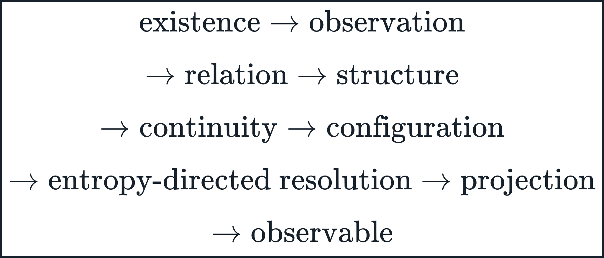
This ordering places the cause before the description of its consequence.
3. The canonical stack
SEAM is the completed operational layer of a dependency stack:

Each layer has one role.
ESIH — principles and constraints
ESIH establishes the first-principle structural requirements. It defines the admissible starting conditions and the continuity-first physical constraints that the mathematical model must obey.
ESAM — mathematical formulation
ESAM expresses those principles as mathematics. It defines count structure, shell structure, relational configuration, field structure, coupling, entropy, admissibility, and configuration resolution.
SEAM — executable mathematical engine
SEAM performs the mathematics. It accepts an admissible input, constructs or retrieves the required structural state, evaluates the applicable operators, resolves the strongest valid closure, and produces the answer-bearing structural state.
Continuum — retained reference structure
The Continuum retains validated structures, observations, relations, and their traceable transformations. It is the persistent record of what has been observed and resolved.
Manifold — active comparison structure
The Manifold is the coherent normalized comparison structure produced from the retained Continuum for an active question or object. It is the environment in which the structural state of the input is compared with retained observation.
Together these layers form one causal and operational chain rather than separate theories.
4. Structure before description
A conventional scientific description generally begins after a physical state already exists. A measured velocity presupposes an object, position, interval, and state transition. A spectrum presupposes matter and an interaction that generated the measured frequencies. A chemical bond length presupposes a resolved molecular structure. An orbital trajectory presupposes persistent bodies and their evolving relation.
SEAM operates upstream of those descriptions.
It asks what structure must exist for the observation to occur.
For atomic construction, the canonical path begins from count and proceeds through structure:
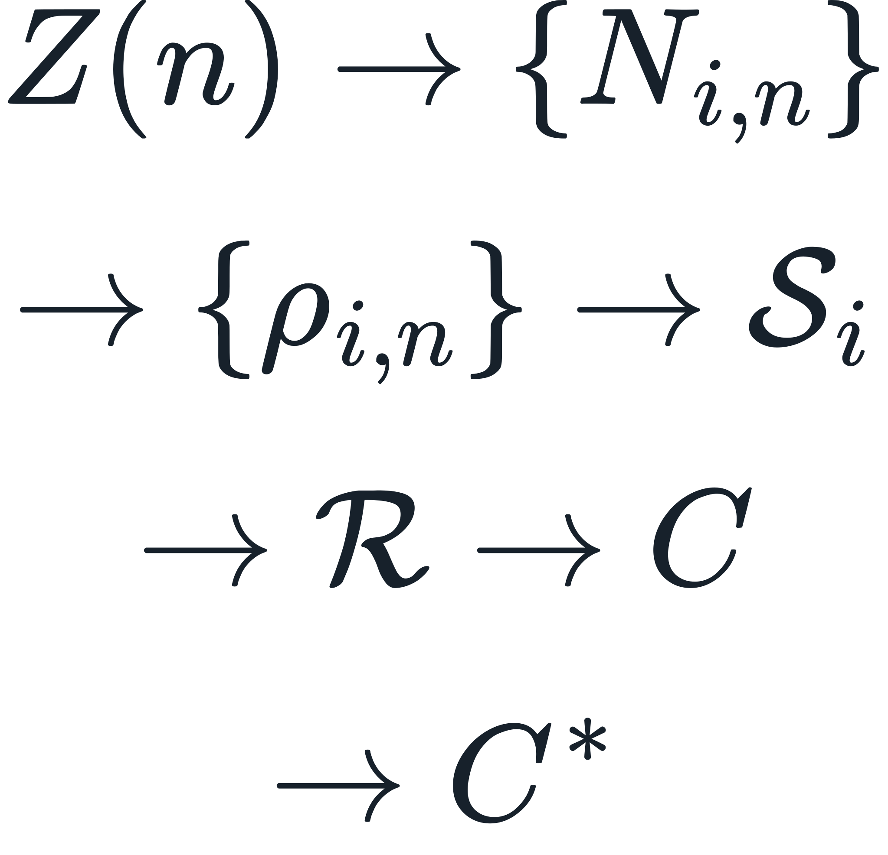
where the complete configuration is
and the resolved configuration is selected by the governing entropy law:
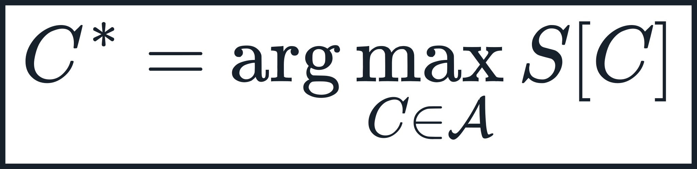
The selected physical structure exists before its downstream scientific description.
5. Entropy as physical resolution
SEAM uses one structural resolution principle across scale. The admissible configuration with the greatest closure under the governing entropy functional is the resolved state.
The canonical entropy composition is:
The terms preserve different physical information:
- Configuration entropy represents the structural possibilities available under discrete count and capacity constraints.
- Field entropy represents the normalized spatial distribution of the resolved structural field.
- Coupling entropy represents structural interaction between entities through their declared overlap and relation.
The same resolution rule governs atomic, molecular, composite, and larger structural configurations. Scale changes the configuration and relation geometry. It does not require a new foundational selector.
The result is a single continuity-centered physical ordering:
5A. Entropy-resolution state and continuous evolution
Configuration selection and physical evolution are two views of the same entropy-directed structure. The selected configuration is determined by the canonical entropy functional, while the evolving physical state is tracked through the entropy-resolution state  :
:

 is the current entropy-resolution state of the realized structure. It carries the degree of structural resolution through change; it does not introduce a second selector. The selector remains the canonical entropy law
is the current entropy-resolution state of the realized structure. It carries the degree of structural resolution through change; it does not introduce a second selector. The selector remains the canonical entropy law
The physical evolution loop precedes downstream projection, Manifold comparison, and validation. The complete operational closure operator therefore audits and resolves a represented result without replacing the native entropy-directed evolution that produced the state.
6. The physical field
The canonical SEAM structural field is built directly from resolved structure.
For shell support
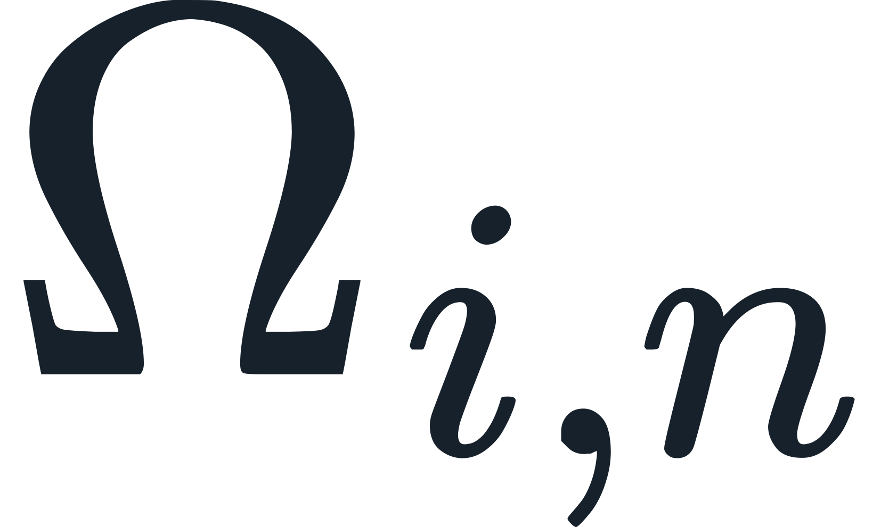
, normalized shell basis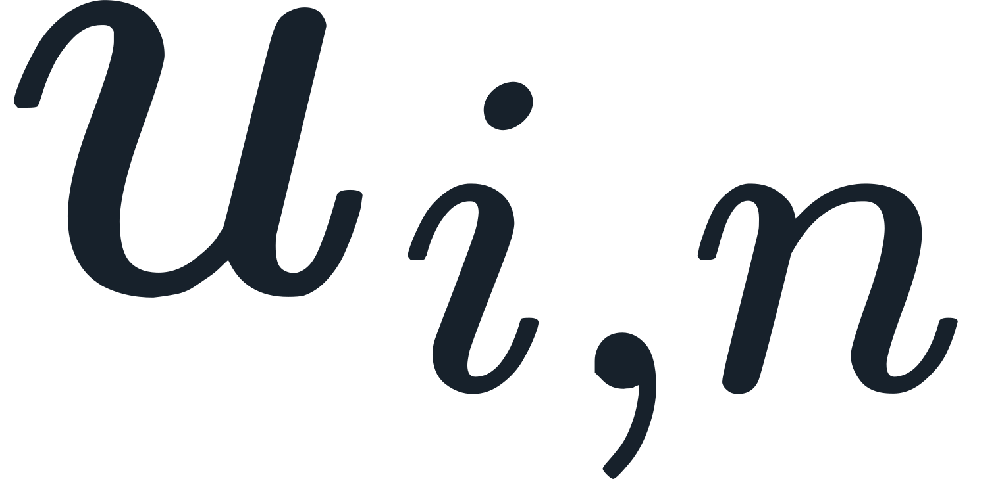
, and occupancy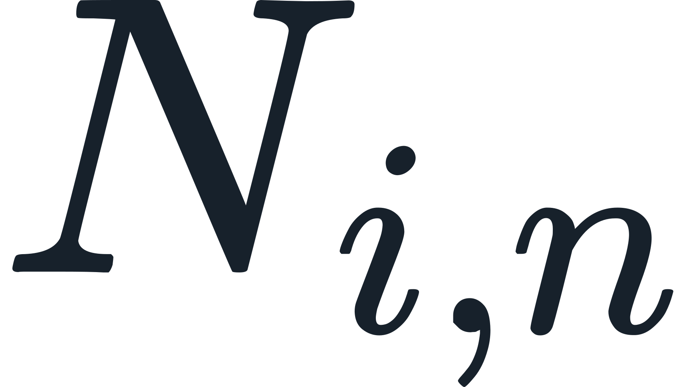
: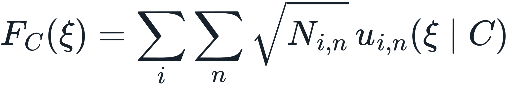
The normalized field density is
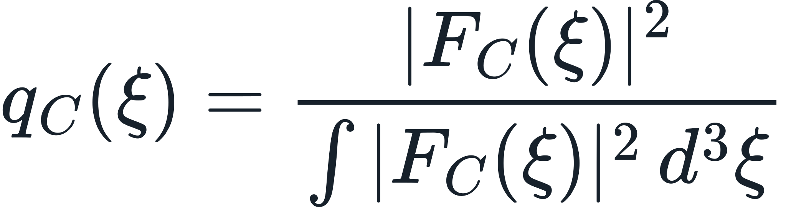
and field entropy is
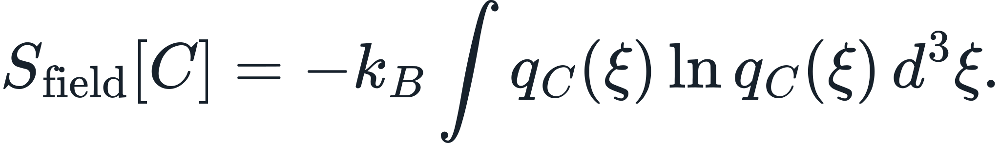
The structural field therefore emerges from the state itself. Its spatial behavior, coupling, dissipation, and interaction are consequences of the represented configuration.
This is the layer from which downstream electromagnetic, chemical, mechanical, thermal, and other observable descriptions are projected.
6.1 Executed signed shell-field law
For a single atom, the canonical shell supports are disjoint annuli. Exactly one shell is active at any radius, so the intra-atomic spatial cross term vanishes:
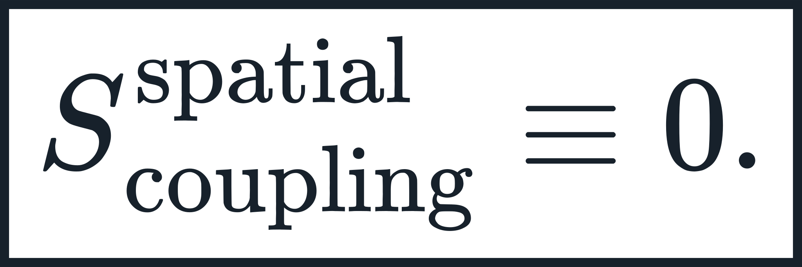
The shells remain coupled through normalization. Direct evaluation of the retained canonical field entropy admits the exact analytical evaluation identity
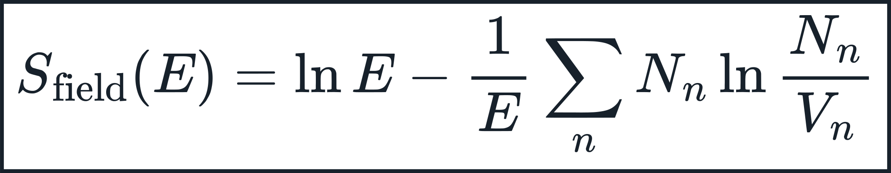
with the total electron count
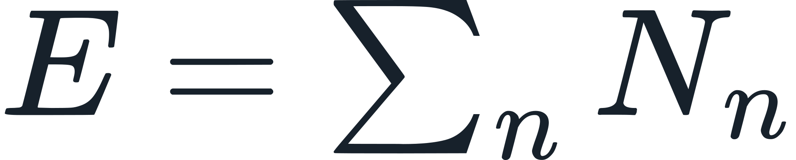
. The term is the inter-shell coupling carried by the shared normalization; the second term carries the shell-specific geometric contribution.The signed shell-field response is the discrete second difference
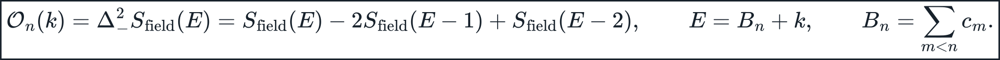
Execution across the complete chain produced the exact sign law:
The result contains 0 violations over 126/126 architectural evaluable states ( ); the empirical-comparison subset is 116/116 (
); the empirical-comparison subset is 116/116 ( ), also with zero violations. The closed-form backward operator reproduces the direct field second difference to machine zero. The structural field therefore carries a measurable signed progression generated directly by the canonical entropy construction.
), also with zero violations. The closed-form backward operator reproduces the direct field second difference to machine zero. The structural field therefore carries a measurable signed progression generated directly by the canonical entropy construction.
6.2 Operator-to-closure integration
The signed shell-field response is carried forward as part of the complete configuration rather than reduced to a standalone scalar description. The canonical integration chain is
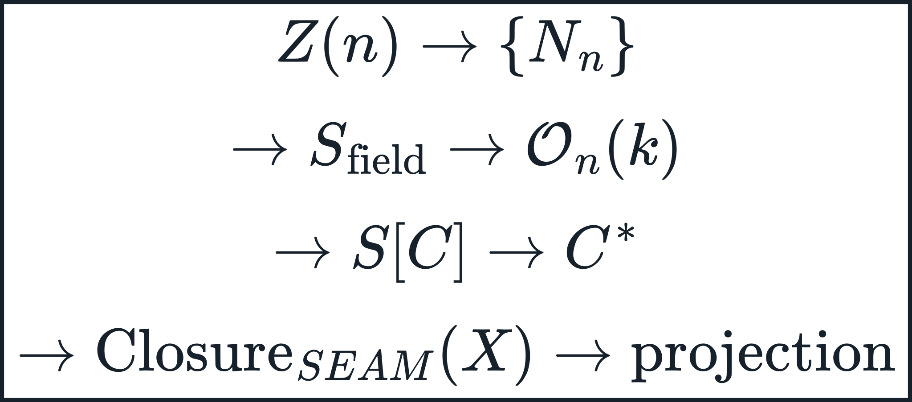
The field term remains one component of the complete entropy functional
Configuration resolution therefore preserves shell structure, field response, and multi-entity coupling in one state before downstream comparison and projection. The complete closure chain is
When the resolved projection contains physical evolution, its interval is bound to native Cs-133 metrology:

This gives one continuous dependency from atomic count and shell geometry through entropy-selected structure, closure, temporal evolution, and observable projection.
7. One interaction across scale
SEAM treats atomic binding, molecular binding, composite interaction, and macroscopic continuation as manifestations of one entropy-governed structural interaction.
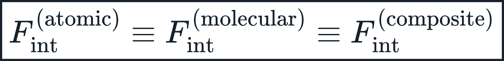
The identity is an identity of governing law. The realized magnitude, geometry, state, and projection differ with configuration and scale.
This establishes a continuous causal structure beneath the many effective force descriptions used across existing science.
7A. Macroscopic attraction as a native attraction-Hamiltonian consequence
Macroscopic attraction remains on the same Continuum causal architecture, but its long-range operator is the separately declared attraction Hamiltonian rather than the compact-support v18.6 molecular entropy derivative.
For resolved constituents at native separation  , use
, use
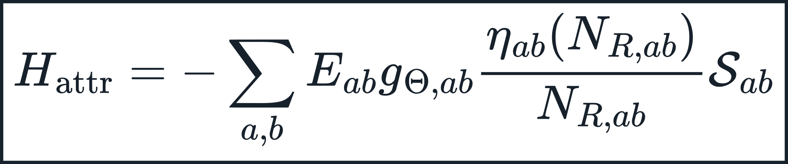
and
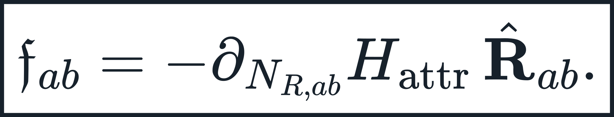
The exterior limit
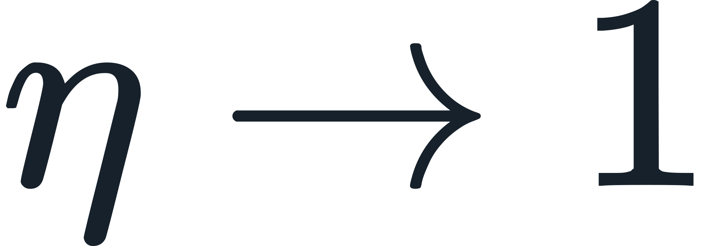
gives the nativeThe v18.6 molecular selected-state branch remains valid in its own scope. Its TAU_PAIR_MAPPING_UNBOUND terminal does not propagate into the attraction/long-range attraction branch.
8. Time, distance, and measurement
SEAM separates the physical primitive from its reporting convention.
Physical time is count-resolved from the cesium-133 hyperfine transition:
Native distance is already structural distance at the native count layer:
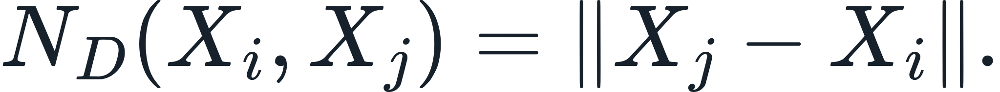
Dimensional reporting is a downstream projection:
This preserves the causal order. The native state is resolved first. Measurement units then describe the resolved state in the requested conventional representation.
9. Observation and the Manifold
Every observation carries structural information.
A text statement, image, spectrum, sensor stream, trajectory, laboratory measurement, biological pattern, spatial map, or other admissible record can be represented as structure. The input modality is therefore a surface property of the observation rather than the mechanism of resolution.
The canonical comparison is:
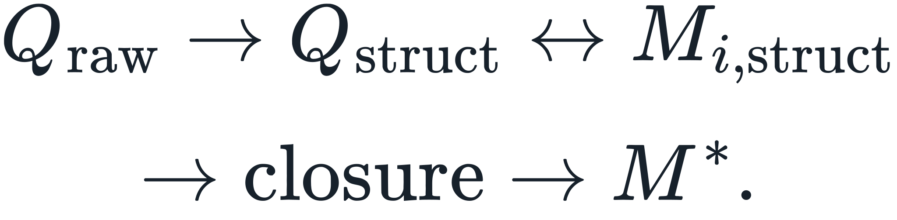
The resolved Manifold location
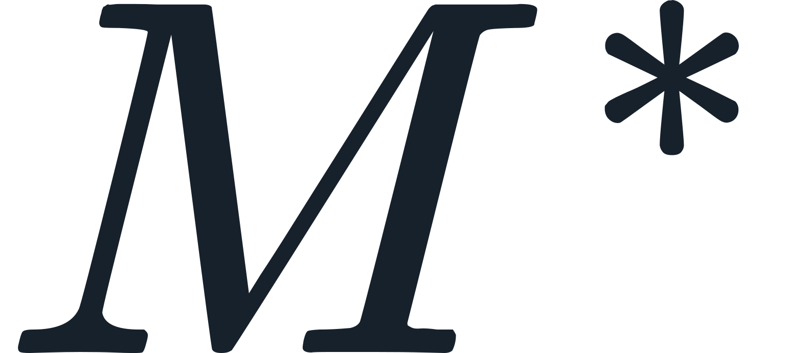
is the retained observation whose structure produces the greatest valid closure with the structure represented by the input.The answer is the resolved structure at that location. Human-readable language is then a projection of the already-resolved state.
10. Scientific law as observational projection
The established equations of science are exceptionally successful because they encode stable relationships among observables.
SEAM places those relations in their causal order:
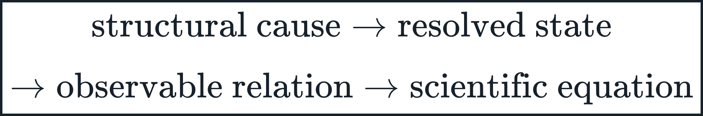
A conventional equation can therefore remain exact, useful, predictive, and empirically validated within its domain while occupying a downstream descriptive layer.
Examples include kinematic relations, conservation equations, constitutive laws, thermodynamic relations, orbital descriptions, chemical measurements, biological correlations, and engineering equations. Their empirical standing is preserved. SEAM supplies the underlying structure responsible for the observed relationship.
The distinction is causal depth, not competition.
10A. Cross-domain consequences of one Continuum
The same structural ordering extends through the observed domains recorded by the Continuum.
| Observed domain | SEAM causal reading |
|---|---|
| Light, RF, radiative transfer | Matter-mediated structural-field transfer followed by source/medium/detector projection |
| Thermal, pressure, sound, vibration | Overlapping projections of the same evolving material/Manifold state |
| Electrical and magnetic response | Structural-state and transfer projections of the common interaction |
| Nuclear transition and decay | Entropy-directed restructuring and shedding followed by Cs-resolved timing and product observation |
| Fluid, acoustic and transport behavior | Aggregate constituent transfer and Manifold evolution |
| Reaction and molecular rates | Counts of resolved structural transitions over Cs-resolved intervals |
| Environmental balances | Boundary-defined accounting projections over an evolving Manifold |
| Biological organization | Realized structure from inherited blueprint, local Manifold context, available material, and entropy-directed evolution |
These are distinct observational surfaces of one underlying structural Continuum. Domain equations retain their demonstrated scientific value as descriptions of those projected observables.
11. Truth as sealed derivation and observation
SEAM uses a two-part truth discipline.
First-principle truth requires a native result derived from declared primitives, relations, operators, and execution rules.
Empirical truth requires the sealed native result to agree with independent observation within the declared test domain.
The sequence is:
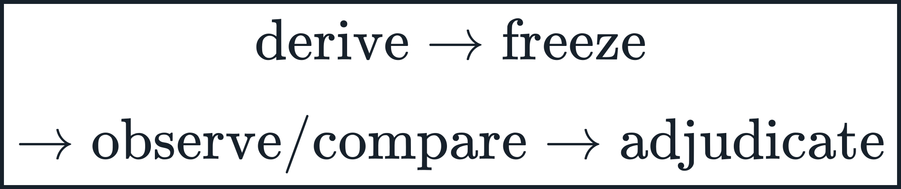
This preserves the distinction between causal derivation and observational confirmation while binding them into one falsifiable scientific process.
11.1 Neutron-conditioned empirical state
The native neutron result is set-valued:
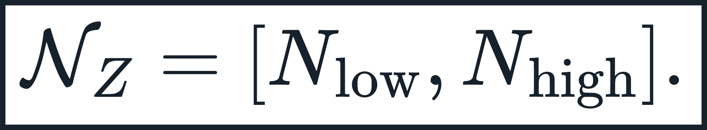
An electron-count-defined atomic structure can therefore correspond to a family of admissible neutron realizations. Empirical mass remains conditioned by both structural source and neutron state:
The measured comparison object is correspondingly set-valued:
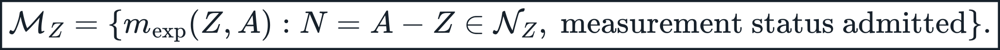
This preserves the physical information carried by isotope families and keeps the native structural state intact through adjudication.
11.2 Empirical adjudication of record
Under the canonical compliance and set-to-set adjudication contracts, the executed record is:
- Neutron closure: observed neutron states contained by the native admissible set for 118/118 current empirical-comparison elements.
- Mass set-join: 110/118 ADMITTED_MEASURED, 8/118 MATCHED_EXTRAPOLATED, 0 UNMATCHED.
Every native row receives a disposition and every measured nuclide is evaluated at nuclide level. These results bind the structural derivation to measured nuclear evidence without changing the frozen native state.
12. Universality
The SEAM operators are general operators rather than case-specific answer rules.
The current universality qualification subjected the structural operator, entropy selector, neutron closure, and coupling operator to 33,200 substitutions. Admissible states closed, inadmissible states refused, and the admissibility/closure partition remained exact throughout the tested operator set.
The importance of this result is structural. The framework operates from declared relations and closure conditions rather than from a catalogue of expected outcomes.
The same causal architecture can therefore be applied to any domain whose relevant structure and observation can be represented under the canonical contract.
13. Continuity and intelligence
The continuity principle extends naturally into persistent information systems.
When a runtime retains structures according to continuity, relation, persistence, and recurring significance, a coherent active state can remain sparse while preserving important topology. The SEAM/CVI work demonstrates that the same continuity logic can organize memory, persistence, reconstruction, attention, and runtime recovery.
This is an application of the completed SEAM causal architecture to information continuity. It demonstrates the breadth of the principle: structure persists through traceable transformation, and coherent state is reconstructed from relation rather than from isolated symbolic fragments.
14. Completion
SEAM now contains the complete causal chain required for its canonical role:
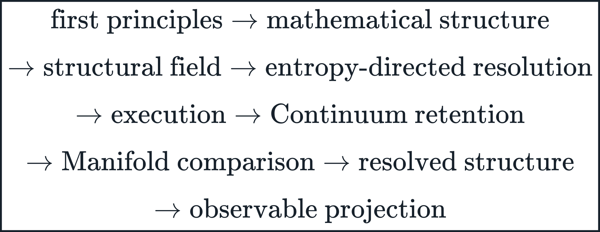
The framework is complete because the causal architecture required for SEAM operation is defined from primitive to observable.
Scientific work with SEAM continues through application: new observations, new domains, new Manifold content, new implementations, new empirical tests, and new consequences of the same completed framework.
Completion therefore marks the transition from framework construction to framework use.
15. Canonical statement
SEAM is the causal structural foundation beneath the observational laws of existing science. ESIH declares the first-principle constraints, ESAM expresses those constraints mathematically, and SEAM executes the resulting structural mathematics. The Continuum retains validated physical structure and observation; the Manifold presents that retained structure for active comparison. Admissible physical states are resolved through the governing entropy law, and conventional scientific quantities are downstream projections of those resolved states. Existing science describes the observed behavior of reality. SEAM describes the structure that causes that behavior.
Current canonical source basis
02_CONTINUUM_TECHNICAL_FOUNDATIONS.mdUNIVERSALITY_TEST_PROTOCOL_v2.mdSEAM_RUN_DISCIPLINE_CANONICAL.mdSEAM_Shell_Field_Operator_Axiom.mdSEAM_FIRST_PRINCIPLES_EVALUATOR_CLOSURE (1).md
16. Documentation relationship
This narrative explains the completed causal picture. The Fundamental Law Charter states the laws, Technical Foundations controls mathematics and execution, the Engineering Specification extracts the implementation-facing system, the Closure and Coverage Matrix records current domain disposition, the Completion Contract records project standing, and the Cold-Read Primer controls review discipline. These documents describe one framework from different required viewpoints.
Part 2: Consolidated Source — 03_SEAM_COLD_READ_PRIMER.md
SEAM Cold-Read Primer
Purpose: Establish the correct reading frame for an independent reviewer, engineer, scientist, or AI encountering the completed SEAM framework for the first time.
Standing: Canonical interpretation discipline.
Required orientation: Read from causal structure outward to observation.
1. First instruction
Read SEAM in its declared causal order.
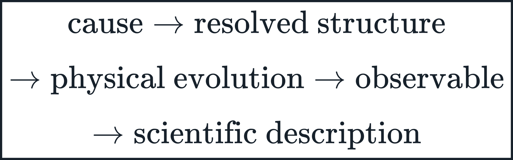
The framework begins one representational layer upstream of conventional scientific equations. Existing science describes the observed behavior. SEAM describes the structural cause that produces the behavior.
A cold read is therefore an exercise in preserving layer identity.
2. The five identities to establish before evaluation
2.1 ESIH
ESIH is the first-principle constraint layer. It declares the structural premises from which the mathematical formulation begins.
2.2 ESAM
ESAM is the mathematical formulation. It defines structure, configuration, field, coupling, entropy, admissibility, and resolution.
2.3 SEAM
SEAM is the executable mathematical engine. It applies ESAM under ESIH constraints.
2.4 Continuum
The Continuum is the persistent retained reference domain of validated structure and observation.
2.5 Manifold
The Manifold is the coherent normalized comparison structure used for an active object or question.
These identities are hierarchical and compositional:
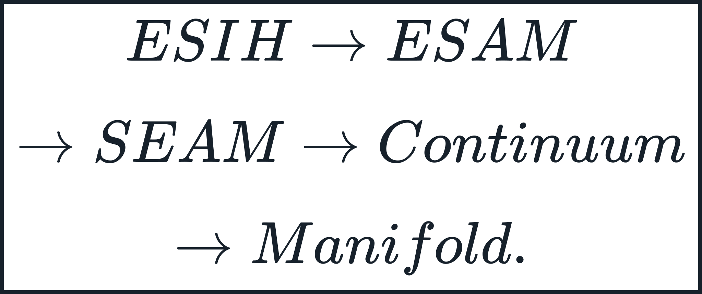
2A. Establish authority before interpretation
A cold read begins by identifying the current canonical build and its authority chain. The canonical technical specification governs mathematics and execution semantics; current sealed contracts and executed artifacts establish Evidence/Runtime/evidence standing.
Apply these rules throughout the read:
- A native SEAM object is defined by SEAM's declared structure, not by a legacy bookkeeping convention.
- An internal artifact is interpreted according to its declared role. A seed, intermediate field, candidate, or diagnostic is promoted to a prediction only when the governing contract defines it as one.
- Native shell assignment is evaluated by the SEAM shell constructor. External atomic tables are evidence/comparison sources, not generators of the native shell state.
- Candidate generation and entropy selection are separate stages. Movement from a seed to a different entropy-selected state is normal selector behavior.
- Native distance is already a structural distance.
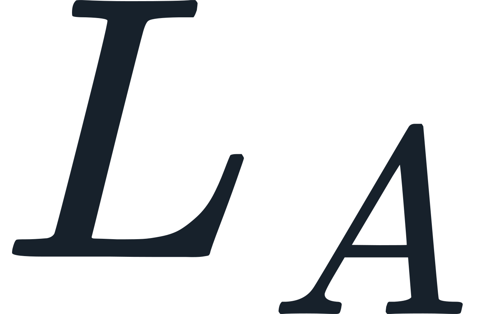
dimensionalizes that result downstream; it does not define the native separation. - Numerical reproduction uses the exact integration geometry, support boundaries, domain, and tolerances declared by the run contract.
- Reconciliation/status colors describe the standing assigned by the ontology or comparison layer. Mathematical closure and executed runtime standing are read from their own canonical records.
- A claim of mathematical absence is evaluated against the complete canonical specification before any conclusion is formed.
2B. Seven-document reading order
For an independent complete read, use this order:
- SEAM Fundamental Law Charter — identify the declared laws.
- SEAM Technical Foundations — Canonical — read the complete mathematics and execution semantics.
- SEAM Canonical Engineering Specification — verify the concise operational extraction against Technical Foundations.
- SEAM Canonical Closure and Coverage Matrix — verify how the completed framework maps across domains.
- SEAM Canonical Completion Contract — verify project standing and completion boundary.
- SEAM Canonical Narrative — read the integrated explanatory account.
- SEAM Cold-Read Primer — retain this document as the audit checklist throughout the review.
The documents are complementary. A statement is evaluated within the jurisdiction of the document that owns that statement.
3. The bedrock distinction
The primary distinction is between causal structure and observational description.
A conventional equation states a reliable relation among observed or derived quantities. SEAM resolves the structural state that gives rise to those quantities.
Use this translation rule throughout the read:
| Conventional scientific object | SEAM reading |
|---|---|
| Measured quantity | Projection of a resolved state |
| Empirical law | Stable relation among projected observables |
| Force equation | Downstream description of structural interaction/evolution |
| Hamiltonian/Lagrangian form | Downstream operator representation of resolved state where applicable |
| Thermodynamic relation | Bulk projection of underlying structural evolution |
| Chemical property | Observable consequence of resolved atomic/molecular structure |
| Biological organization | Realized structural pattern within the Continuum/Manifold |
| Sensor data | Observation carrying structural continuity information |
The correct comparison therefore asks whether a SEAM-resolved state projects to the measured observable.
4. Read primitives before projections
When a SEAM symbol appears, determine its layer before interpreting it.
The core atomic path is:
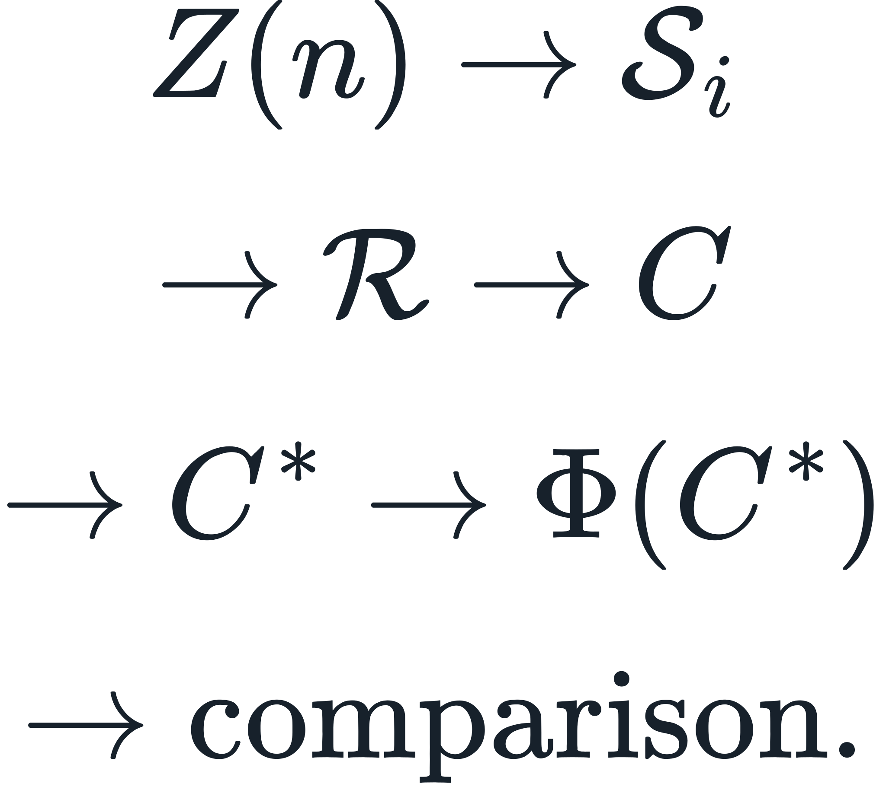
Key objects:
 : atomic baseline count;
: atomic baseline count; : seven-shell structural state;
: seven-shell structural state;- : complete relational state;
 : complete configuration;
: complete configuration;![S[C]](assets/formulas/4f728485eeb02450c0dc.svg) : governing entropy functional;
: governing entropy functional;- : entropy-resolved admissible configuration;
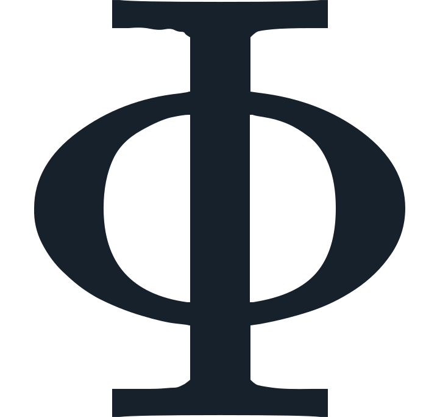
: downstream projection;- : internal structural/continuity coherence;
- : Manifold coherence;
- : Manifold residual.
Each object retains its own role. Layer identity is part of the meaning.
5. Preserve the two kinds of closure
SEAM uses closure at more than one level.
Configuration closure
Physical candidate resolution:
Operational/query closure
Downstream comparison between represented query and candidate/reference structures under the active ARCV contract.
These are sequentially related and mathematically distinct.
The cold reader should track which closure is being discussed at every step.
6. Preserve the two kinds of coherence
Structural coherence
describes the internal structural/continuity state before Manifold comparison.
Manifold coherence
describes the relation between the retained projection and the active Manifold reference.
The canonical sequence is:
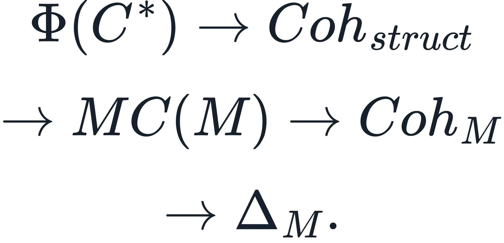
7. Read the entropy law as the selector
The governing physical resolution law is:
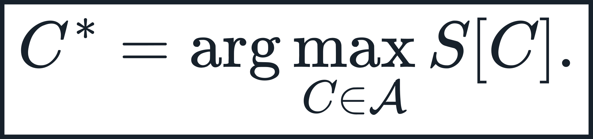
with
The complete configuration is resolved first. Downstream conventional equations can then describe the resulting state in familiar variables.
This gives a simple reading rule:
Selection belongs to native structure. Description belongs to projection.
7A. Read  as the evolving entropy-resolution state
as the evolving entropy-resolution state
The canonical entropy law selects admissible structure.  records the current entropy-resolution state as that structure changes:
records the current entropy-resolution state as that structure changes:

Read this as the native physical evolution loop. The composed closure operator
is the operational validation/resolution composition applied around that native process. The two statements are complementary rather than interchangeable.
8. Read conventional physics downstream
SEAM uses established scientific measurement as the observation layer.
A conventional observable is therefore interpreted as evidence about the resolved state.
The canonical evidence direction is:
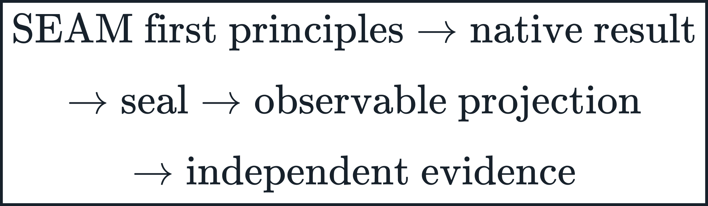
This ordering makes first-principle derivation and empirical truth simultaneously explicit.
8A. Read neutron and mass states as sets
The native neutron object is a permissible interval:
Read this as the physical prediction object. The measured comparison object is the nuclide family whose neutron coordinate lies inside that native interval:
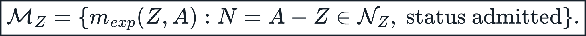
Mass therefore carries two native coordinates:
This rule is load-bearing. Preserve the complete native neutron set, preserve the complete measured nuclide set, and compare them set-to-set. The native structural source remains frozen throughout the empirical join.
The active nuclear formation-envelope certificate is the current numerical authority. Its adjudication record is:
- bounded-band neutron containment over the current empirical comparison range: 118/118;
- mass join: 110 ADMITTED_MEASURED / 8 MATCHED_EXTRAPOLATED / 0 UNMATCHED.
The result is read at its declared scope: complete containment and complete row disposition under the canonical adjudication contract.
9. Read time and distance at their proper layers
Native time
Native distance
Conventional-unit projection
The native object carries structural meaning first. Unit representation follows as a downstream measurement layer.
10. Read the Continuum and Manifold separately
The Continuum retains validated reference structure through time.
The Manifold is constructed from retained Continuum state for active comparison.
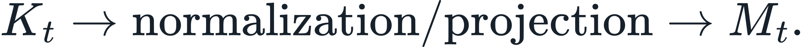
A resolved Manifold location represents structural correspondence with an observation-bearing state. It is therefore a structural resolution event.
This distinction is central to understanding how SEAM answers a question without requiring a literal stored textual answer.
11. Read modality as an input surface
Text, imagery, audio, sensor data, spectra, spatial data, numerical records, and other observations are input forms.
The engine mechanism is structural:
The same structural representation rule applies to retained observations:
The comparison therefore occurs between structures rather than between surface encodings.
12. Read the resolver last
The resolver receives the primitive result after structural resolution:
Natural language, classification, conventional units, diagrams, or machine-readable forms are representations of the resolved state.
A cold reader should therefore evaluate the native result before evaluating the prose used to express it.
13. Read execution through the contract
Every run is governed by an immutable contract.
Before interpreting a result, identify:
- objective;
- canonical specification identity;
- exact inputs;
- equations/operators;
- coordinate/unit contract;
- coefficient rules;
- domain;
- numerical/analytic method;
- tolerances;
- terminal states;
- artifact requirements;
- evidence/comparator reveal event;
- disposition rule.
The run contract defines the scope of the result.
A cold reader evaluates the run against its declared contract and then evaluates the scientific claim at the layer reached by that run.
14. Read terminal states as completed records
When a declared terminal predicate is reached, the run completes through:
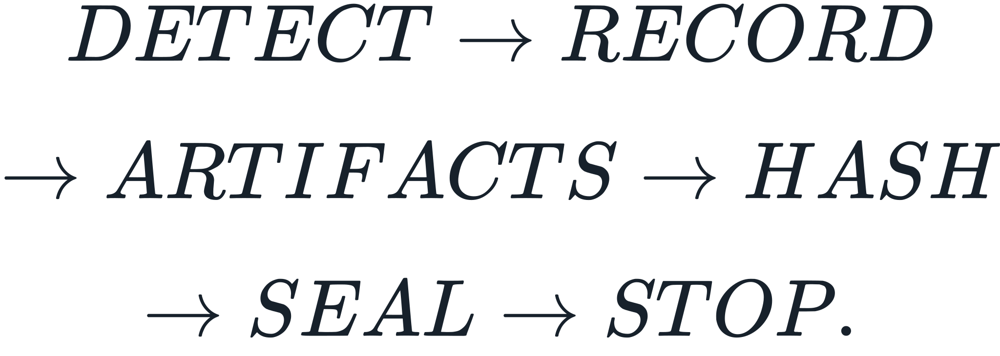
A larger workflow can continue through a declared successor edge. The predecessor result retains its exact scoped meaning.
This preserves both reproducibility and causal accountability.
14A. Read the signed shell field as an executed law
The canonical single-atom field has disjoint annular shell supports. Spatial cross-shell overlap is therefore zero inside one atom, while normalization couples every occupied shell through the total count:
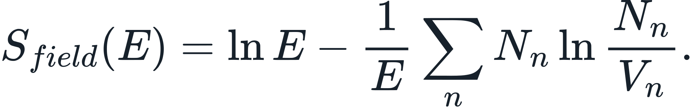
The structural response is
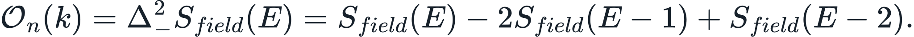
Its executed sign law is exact across the 118-element empirical comparison chain:
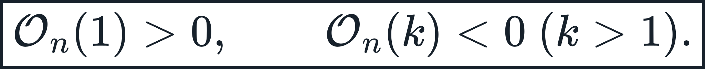
Read  as the invariant operator. It is the field response generated by total-count normalization and shell geometry, and it reproduces the direct field second difference to machine zero.
as the invariant operator. It is the field response generated by total-count normalization and shell geometry, and it reproduces the direct field second difference to machine zero.
14B. Read scaling through the full structural chain
The signed shell response is read at operator level:
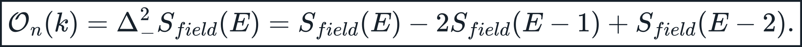
Its meaning is preserved by carrying it into the complete configuration functional rather than isolating it from the other state terms:
Read the resulting state in this order:
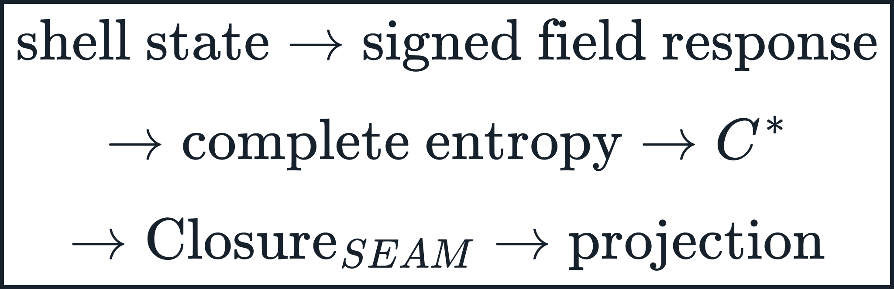
The complete closure expression is
A temporal projection inherits the Cs-133 interval relation, and neutron-conditioned evidence retains the native interval
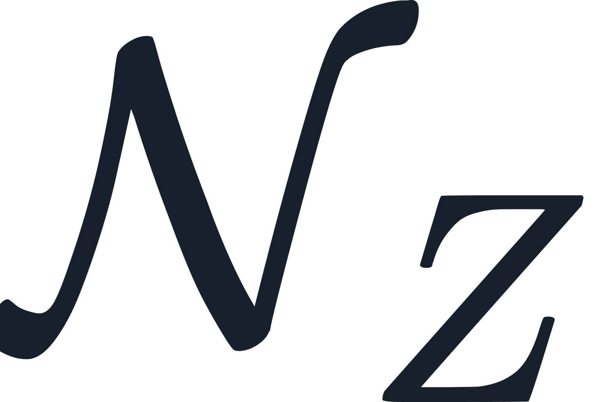
through set-to-set adjudication. These are parts of one dependency chain, not independent explanatory layers.14C. Read macroscopic attraction from the native attraction operator
Do not route the long-range attraction calculation through the compact-support v18.6 entropy derivative. The active macroscopic branch is
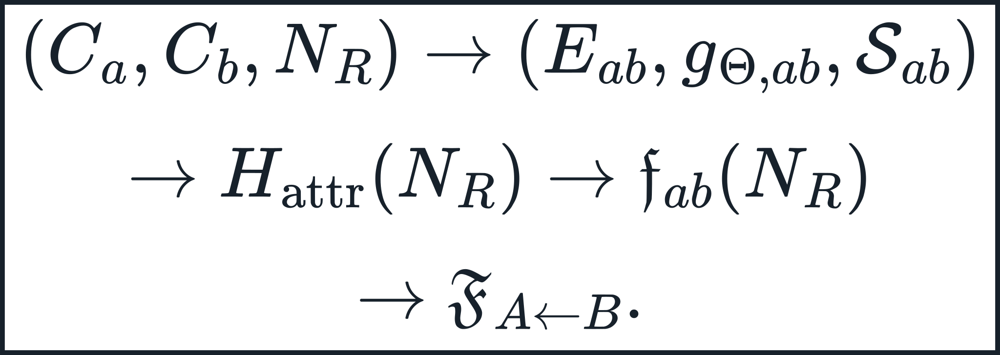
In the exterior regime
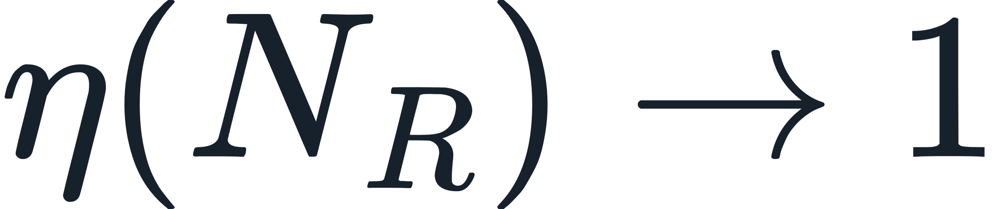
, so-1/N_R and its native radial derivative is proportional to 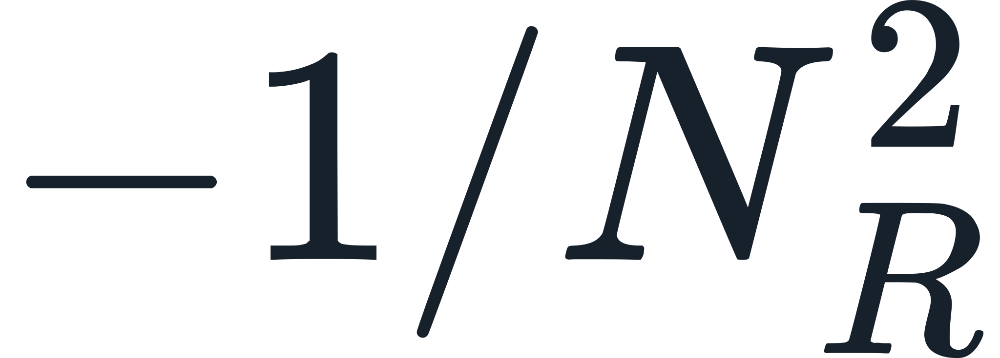
. The state product supplies magnitude; finite-body aggregation supplies scale continuation. Conventional projection occurs only after native freeze.The same proper-use rule is now executed across the entire blind native shell range  . Evidence 15 carries every blind shell state into a retained two-node configuration and then through the already-defined selected-state Hamiltonian, pair-Hamiltonian, and force chain. The result is
. Evidence 15 carries every blind shell state into a retained two-node configuration and then through the already-defined selected-state Hamiltonian, pair-Hamiltonian, and force chain. The result is 128/128 structural lifts and 128/128 defined native interaction quantities. The matrix never replaces the complete state with a spacing coordinate, an outer-shell scalar, or a doubled-Z atomic surrogate.
\n## Reading the interaction calculation
The interacting shell field is not frozen to the isolated uniform indicator. The admissible class is
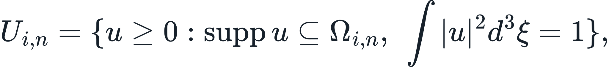
and the interacting field is selected by
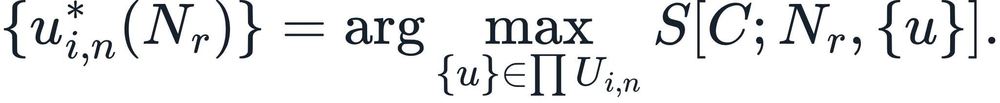
For the v18.6 molecular branch, the native radial response is the resulting entropy curve
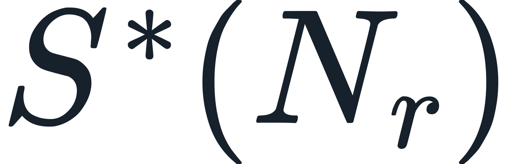
. Pair energy is the resolved molecular Hamiltonian difference and force is the derivative of that energy curve: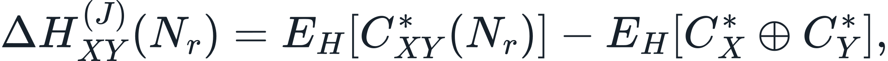
Do not reconstruct the v18.6 molecular selector through separate electric/magnetic channel weights, phase terms, or the long-range attraction regularizer. Conversely, do not use the compact-support v18.6 entropy derivative as a substitute for the separately declared  interaction operator.
interaction operator.
Numerical reproduction rule — R4
Do not compare a grid/L-BFGS-B, voxel, cylindrical, Monte Carlo, arbitrary-precision, Adam, or other independently chosen optimizer result directly to a canonical  value and call the discrepancy physical. First reproduce the active
value and call the discrepancy physical. First reproduce the active VF-REGION-LBFGSB-R4 contract. A different numerical realization is a different experiment unless a successor contract formally replaces R4.
For molecular Hamiltonian questions, elapsed SEAM time is supplied by the declared Cs-133 event interval when the requested projection depends on time. Static pair-state comparison does not invent elapsed time. This is a closed input-contract rule.
Aggregate-count reading rule
Do not treat a reported test count as a replacement for its tested population. When this archive reports , locate the row-level or lossless denominator artifact before adjudicating the result. For the 33,200 operator qualification, use Evidence 18 and its CSV ledger; the four aggregate operator counts are only summaries.
EPN band versus stability selector
Use the current  formation envelope and certified four-selector nuclear contract.
formation envelope and certified four-selector nuclear contract.  , , , and
, , , and  are interpreted only through the active nuclear operators and their declared run inputs.
are interpreted only through the active nuclear operators and their declared run inputs.
R13 molecular/Cavendish reading rule
The Fe–Fe v18.6 result is retained as a molecular evaluator result: its recorded  values are negative inside overlap and reach zero at separation. Cu and Au retain positive interior excess at their recorded points; Ag does not show the same positive-interior behavior in the retained comparison. Treat the outer-shell-occupancy association as an observed molecular pattern only.
values are negative inside overlap and reach zero at separation. Cu and Au retain positive interior excess at their recorded points; Ag does not show the same positive-interior behavior in the retained comparison. Treat the outer-shell-occupancy association as an observed molecular pattern only.
Do not use those molecular entropy curves to terminate the macroscopic branch. The native long-range constructor is the separately declared  ; its exterior radial form and state-derived magnitude must be read from that operator, not manufactured by the aggregation runtime and not inferred from the compact-support molecular curve.
; its exterior radial form and state-derived magnitude must be read from that operator, not manufactured by the aggregation runtime and not inferred from the compact-support molecular curve.
Macroscopic validation-population reading rule
A conventional specimen label such as 10 kg Fe identifies only one external validation population. After ingress translation, the native run uses retained constituent state and native coordinates. Population aggregation is available. The pair response supplied to it comes from the declared native attraction Hamiltonian and its state-derived factors; a unit-amplitude surrogate is not an admissible replacement.
For the macroscopic attraction/orbital calculation, resolve each constituent independently and then evaluate the retained states together through the canonical pair relation. The resolved pair state continues directly through the declared selected-state Hamiltonian consequence into the native pair amplitude and  . Do not insert an independent
. Do not insert an independent  handoff, fitted coefficient, or comparator-derived amplitude.
handoff, fitted coefficient, or comparator-derived amplitude.
The exact target contract is retained in the active evidence certificate.
R14 macroscopic source-constructor reading rule
The macroscopic source is not an undeclared placeholder. Read Appendix O.4.1 before declaring , , or absent.
The active constructor is
with native source-density reconstruction . The reporting form is a downstream continuum/reporting representation and must not be used as a primitive in a native interaction run.
The detailed  expansion is a representative downstream structural-coordinate expansion. It does not define the native interaction source. The native interaction source is the resolved pair consequence obtained by evaluating the two independently retained structures together; body aggregation then consumes those resolved pair responses.
expansion is a representative downstream structural-coordinate expansion. It does not define the native interaction source. The native interaction source is the resolved pair consequence obtained by evaluating the two independently retained structures together; body aggregation then consumes those resolved pair responses.
Current native attraction reading rule — R24
Read Technical Foundations O.4.6–O.4.8 and Evidence 31 as the current atomic-to-orbital interaction authority. Evidence 31 is the single replayable chain from Fe atomic composition through native attraction, finite-body aggregation, and the conic orbital solution.
The active dependency chain is:
resolved atomic/pair state C_X,C_Y
-> state-derived pair product K_XY = E_XY g_Theta,XY S_XY
-> native attraction Hamiltonian H_attr(N_R)
-> native pair force f_XY(N_R)
-> finite-body aggregation
-> count-resolved time evolution
-> native orbital equation
-> conic solution and circular-orbit specialization
-> frozen native result
-> optional conventional projection
The native chain does not use Newton's G,  , a Cavendish calibration, a kilogram-force primitive, or SI regression as a defining input. A conventional mass label may be used only at ingress to select a retained constituent population; it does not participate in the native dynamics after that population is resolved.
, a Cavendish calibration, a kilogram-force primitive, or SI regression as a defining input. A conventional mass label may be used only at ingress to select a retained constituent population; it does not participate in the native dynamics after that population is resolved.
Evidence 31 verifies the complete Fe replay through the orbital equation with exact separation scaling, exact population scaling, and zero Binet residual.
Current native terminal: SEAM_RESOLVED_STATE_PAIR_RELATION_CLOSED
The R24 no-reduction terminal remains valid only as the exact downstream algebraic continuation proof conditional on populated retained pair factors.
Current resolved-state interaction execution — R28
Do not search for a third pair-factor constructor after the pair state has already been resolved. The canonical execution is two-stage:
resolve A -> Sigma_A
resolve B -> Sigma_B
(Sigma_A,Sigma_B,N_R) -> resolved pair state
resolved pair state -> Hamiltonian consequence -> K_ab -> H_attr
Evidence 35 executes Fe–Fe, Fe–Cu, and Cu–Cu under this contract. The mixed pair emits a nonzero cross-state overlap from the two different retained structures. The successful terminal is SEAM_RESOLVED_STATE_PAIR_RELATION_CLOSED.
R231 canonical nuclear authority lock
Current nuclear formation authority is the certified  four-selector contract.
four-selector contract.